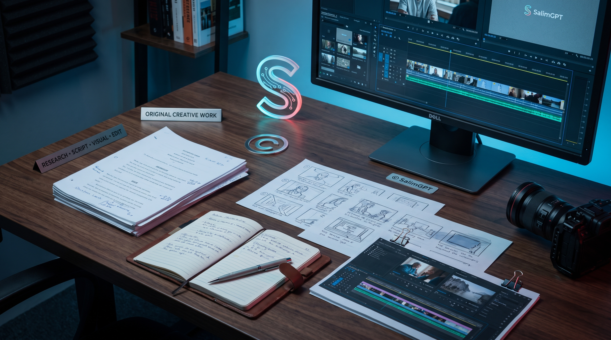

Original Editorial Work
Script, structure, editorial arrangement ও documentary presentation।
SalimGPT-এর documentary production-এ নিজস্ব research arrangement, script, editorial structure, prompt design, generated visual, graphics, editing, sound arrangement এবং final presentation-এর পাশাপাশি প্রয়োজন অনুযায়ী third-party image, archive বা footage ব্যবহার হতে পারে। অন্যের material ব্যবহার করা হলে applicable permission, license, source condition এবং relevant rights মেনে ব্যবহারের নীতি অনুসরণ করা হয়।

কোনো image, footage, archive, illustration, music, recording বা অন্য third-party material SalimGPT-এর documentary-তে edit, crop, color grade, animate বা AI-assisted transform করা হয়েছে— শুধু এই কারণে original rights automatically SalimGPT-এর হয়ে যায় না।
Original copyright holder-এর অধিকার, license terms, permission condition এবং applicable law পৃথকভাবে প্রযোজ্য থাকতে পারে। তাই third-party material এবং SalimGPT-created production asset-এর ownership একভাবে দেখা হয় না।
অনুমতি ছাড়া ব্যবহারকে “editing” বা “transformation” দিয়ে বৈধ ধরে নেওয়া SalimGPT-এর নীতি নয়।একই documentary-এর ভেতরে বিভিন্ন asset-এর ownership ও usage right ভিন্ন হতে পারে।
Script, structure, editorial arrangement ও documentary presentation।
SalimGPT-এর জন্য prompt ও production direction দিয়ে তৈরি visual।
Text-to-video, image-to-video অথবা other AI-assisted footage।
Permission বা license-এর অধীনে ব্যবহৃত third-party material।
Applicable status যাচাই করে lawfully usable historical material।
Original creator বা rights holder-এর মালিকানাধীন কাজ।
Documentary-এর topic selection, research organization, information arrangement, script development, narrative structure, visual planning, prompt design, scene selection, editing, graphics placement, pacing এবং final publication assembly SalimGPT-এর নিজস্ব production process-এর অংশ হতে পারে।
Facts বা historical events নিজেরাই কারও copyright property নয়; কিন্তু research-এর ভিত্তিতে তৈরি original wording, script expression, selection, arrangement এবং creative presentation applicable law অনুযায়ী protectable elements হতে পারে।
একইভাবে final documentary-তে বহু asset একত্র করে যে editorial composition, sequence, timing এবং audiovisual presentation তৈরি করা হয়, সেটি SalimGPT-এর production identity-এর অংশ।
কোনো historical date, scientific fact, public event বা সাধারণ factual information শুধু SalimGPT গবেষণা করেছে বলে SalimGPT-এর exclusive property হয়ে যায় না।
একই information-এর ওপর ভিত্তি করে SalimGPT-এর original script wording, narrative arrangement, graphics, editing এবং compiled presentation আলাদা creative work হতে পারে।
SalimGPT-এর research, scene concept, prompt design, visual direction, generation, selection, revision এবং editing-এর মাধ্যমে তৈরি AI-assisted image ও footage SalimGPT-এর production workflow-এর অংশ হিসেবে সংরক্ষণ ও ব্যবহার করা হতে পারে।
একটি generated scene documentary-এর নির্দিষ্ট narrative প্রয়োজন অনুযায়ী তৈরি হতে পারে এবং final documentary-তে SalimGPT সেই asset-এর selection, placement, modification ও editorial use নিয়ন্ত্রণ করে।
তবে purely AI-generated output-এর copyright status সব jurisdiction-এ একই নয়। কোনো AI service-এর terms-ও output use বা ownership সম্পর্কে আলাদা শর্ত নির্ধারণ করতে পারে।
তাই “SalimGPT production asset” এবং “সব দেশে নিশ্চিত exclusive copyright”— এই দুটি দাবি একই নয়। সম্পূর্ণ AI নীতি পড়ুনDocumentary-এর প্রয়োজন অনুযায়ী scene কী হবে তা নির্ধারণ।
Subject, environment, camera, motion ও lighting নির্দেশনা।
নির্দিষ্ট AI system দিয়ে visual বা footage তৈরি।
Generated variation থেকে প্রয়োজনীয় output নির্বাচন।
প্রয়োজন হলে regenerate, crop, edit বা refine।
Documentary timeline-এ editorial context অনুযায়ী ব্যবহার।
SalimGPT কোনো still image থেকে AI-assisted motion footage তৈরি করতে পারে। তবে image-to-video process-এর আগে source image-এর usage right থাকা গুরুত্বপূর্ণ।
Source image যদি SalimGPT-এর নিজস্ব generated asset হয়, তাহলে applicable AI tool terms অনুযায়ী production-এ সেটি ব্যবহার করা হয়।
Source image যদি অন্য ব্যক্তি, photographer, archive, agency বা institution-এর হয়, তাহলে প্রয়োজনীয় permission, license বা lawful-use basis পৃথকভাবে বিবেচনা করা হয়।
কোনো documentary topic-এর সঙ্গে সরাসরি সম্পর্কিত archive, photograph, footage, illustration বা other media প্রয়োজন হতে পারে।
এমন ক্ষেত্রে SalimGPT rights holder, creator, archive, agency, institution বা authorised source-এর permission বা license condition অনুযায়ী material ব্যবহার করতে পারে।
কিছু permission বিনামূল্যে হতে পারে, কিছু ক্ষেত্রে attribution বাধ্যতামূলক, কিছু material-এর commercial license প্রয়োজন হতে পারে, আবার কিছু ক্ষেত্রে অর্থের বিনিময়ে usage right নেওয়া হতে পারে।
যে condition-এ permission পাওয়া হয়েছে, সেই condition অনুযায়ী documentary-তে material ব্যবহার করার নীতি অনুসরণ করা হয়।
Professional archive, photography collection, stock library, agency footage অথবা specific rights holder commercial ব্যবহার অনুমোদনের জন্য license fee চাইতে পারে।
SalimGPT প্রয়োজন অনুযায়ী এমন license বা permission অর্থের বিনিময়ে গ্রহণ করতে পারে। অর্থ প্রদান করলেই original copyright SalimGPT-এর কাছে transfer হয়ে যায়— এমন নয়।
সাধারণত payment-এর মাধ্যমে নির্দিষ্ট usage right পাওয়া যেতে পারে, যার scope agreement বা license terms দ্বারা নির্ধারিত হয়।
Creator বা source credit দেওয়ার requirement।
Monetized documentary-তে ব্যবহার অনুমোদিত কি না।
Crop, edit, animation বা alteration অনুমোদিত কি না।
কোন platform-এ publication করা যাবে।
Usage নির্দিষ্ট region-এ সীমিত কি না।
License নির্দিষ্ট সময়ের জন্য কি না।
Exclusive নাকি non-exclusive permission।
Original asset আলাদাভাবে পুনর্বিতরণ করা যাবে কি না।
কিছু licensed বা permission-based material-এর ক্ষেত্রে creator, photographer, archive, institution অথবা rights holder-এর credit দেওয়া license-এর শর্ত হতে পারে।
Attribution documentary-এর on-screen text, description, website reference, end credit অথবা অন্য উপযুক্ত স্থানে দেওয়া হতে পারে— source condition ও presentation অনুযায়ী format পরিবর্তিত হতে পারে।
Credit দেওয়ার অর্থ copyright ownership transfer নয়; বরং original creator বা source-এর অধিকার ও contribution স্বীকার করা।
একটি documentary-র script SalimGPT-এর original হতে পারে, narration synthetic হতে পারে, কিছু footage SalimGPT-এর generated asset, কিছু image licensed archive-এর এবং কিছু material public-domain হতে পারে।
তাই পুরো production-কে একটিমাত্র ownership category-তে ফেলা সবসময় সঠিক নয়।
Final documentary-এর composition-এর ওপর SalimGPT-এর applicable rights থাকতে পারে, কিন্তু ভেতরে ব্যবহৃত third-party asset-এর underlying rights তাদের respective owner-এর কাছেই থাকতে পারে।
Historical image বা footage বহু বছর পুরোনো হলেই তা automatically copyright-free হয়ে যায় না।
Copyright duration, publication history, jurisdiction এবং source status অনুযায়ী legal status ভিন্ন হতে পারে।
Public-domain material ব্যবহার করলে available rights information যতটা সম্ভব যাচাই করার নীতি অনুসরণ করা হয়।
Creator credit প্রয়োজন হতে পারে।
Commercial use সীমিত হতে পারে।
Modification অনুমোদিত নাও হতে পারে।
Derivative work-এর licensing condition থাকতে পারে।
কোনো Creative Commons বা অন্য open license ব্যবহার করার আগে exact license version ও applicable conditions দেখা গুরুত্বপূর্ণ।
কোনো museum, archive, university collection বা website historical image host করছে— শুধু এ কারণে সেই institution সব underlying copyright-এর owner—এমন assumption করা ঠিক নয়।
Collection-এর access rule, reproduction policy, metadata, creator information এবং rights statement আলাদাভাবে দেখা প্রয়োজন হতে পারে।
একইভাবে online access পাওয়া মানে documentary-তে commercial reuse-এর automatic permission নয়।
উপরোক্ত editing বা transformation কোনো third-party work-এর original copyright automatically বাতিল করে না।
বিভিন্ন jurisdiction-এ quotation, criticism, review, reporting, education বা other limited use-এর জন্য copyright exception থাকতে পারে।
কিন্তু “fair use” বা equivalent concept সব দেশে একইভাবে কাজ করে না এবং কোনো use automatically lawful হয়ে যায় না।
SalimGPT-এর preferred approach হলো যেখানে practicable, clear permission, license, public-domain status বা other defensible lawful-use basis ব্যবহার করা।
Licensed, original, generated অথবা lawfully usable music।
Library terms বা applicable permission অনুযায়ী ব্যবহার।
AI voice service-এর applicable terms অনুযায়ী।
SalimGPT-এর logo, wordmark, site design, documentary artwork, custom graphic system এবং other original brand elements SalimGPT-এর brand identity-এর অংশ।
অন্য website, channel, product বা service-কে SalimGPT-এর official publication হিসেবে দেখানোর উদ্দেশ্যে brand assets ব্যবহার করা অনুমোদিত নয়।
“GPT” শব্দের উপস্থিতি OpenAI, ChatGPT বা অন্য কোনো AI provider-এর সঙ্গে official affiliation, ownership বা endorsement নির্দেশ করে না।
Permission নিয়ে ব্যবহার ownership transfer নয়।
Licensed use original copyright পরিবর্তন করে না।
তথ্য ব্যবহার মানে source publication-এর ownership নয়।
License মেনে ব্যবহার creator identity মুছে দেয় না।
Third-party material ব্যবহার করলে available permission email, license receipt, invoice, source URL, rights statement, attribution requirement অথবা relevant documentation production record-এর অংশ হিসেবে সংরক্ষণ করা হতে পারে।
এর উদ্দেশ্য হলো future review, attribution verification, dispute resolution অথবা platform inquiry-এর সময় usage basis পুনরায় দেখা সহজ করা।
কোনো creator, photographer, archive, institution বা rights holder যদি মনে করেন SalimGPT-এর কোনো publication-এ তাদের material ভুলভাবে, permission-এর বাইরে অথবা incorrect attribution-এ ব্যবহার করা হয়েছে, তাহলে বিষয়টি review করার সুযোগ থাকবে।
Valid concern প্রমাণিত হলে পরিস্থিতি অনুযায়ী credit update, replacement, removal, licensing clarification অথবা অন্য appropriate action নেওয়া হতে পারে।
যোগাযোগ করুনSalimGPT-এর documentary, written article, script, custom graphic, thumbnail, generated production asset অথবা other original content public website বা social platform-এ দেখা যাচ্ছে বলে তা unrestricted copy বা reupload-এর অনুমতি হিসেবে ধরে নেওয়া উচিত নয়।
Short quotation, reference, sharing অথবা other use-এর জন্য applicable law, platform functionality এবং SalimGPT-এর content-use policy বিবেচনা করতে হবে।
AI tool image generate করতে পারে, editing software footage modify করতে পারে, search engine source খুঁজে দিতে পারে— কিন্তু কোনো material legally usable কি না সে বিষয়ে final responsibility technology-এর ওপর ছেড়ে দেওয়া যায় না।
SalimGPT-এর production-এ rights, permission, source condition এবং final usage-এর overall review human editorial control-এর অংশ।
Documentary research, script direction, prompt design, visual selection, editing, source review, third-party material integration এবং final publication-এর overall production direction পরিচালনা করেন Mohammad Salim।
External source বা technology production-এ ব্যবহার হলেও SalimGPT-এর final editorial responsibility স্বাধীনভাবে বজায় থাকে।
পরিচালক সম্পর্কে জানুনCopyright law, AI-generated content-এর legal status, fair-use doctrine, public-domain status এবং licensing rules jurisdiction অনুযায়ী পরিবর্তিত হতে পারে।
তাই এই page universal legal determination বা professional legal advice নয়; এটি SalimGPT-এর production ও rights-handling approach ব্যাখ্যা করে।
কোনো নির্দিষ্ট rights dispute বা complex licensing issue-তে applicable law ও প্রয়োজনীয় professional guidance আলাদাভাবে বিবেচনা করা হতে পারে।
SalimGPT নিজস্ব research, script, visual direction, AI-assisted asset, editing এবং documentary presentation-এর মাধ্যমে নিজস্ব production identity তৈরি করার চেষ্টা করে।
একই সঙ্গে অন্য creator, photographer, archive, institution এবং rights holder-এর material ব্যবহার হলে তাদের applicable rights, permission এবং conditions সম্মান করা production responsibility-এর অংশ।
Create independently. License responsibly. Credit appropriately. Respect ownership.